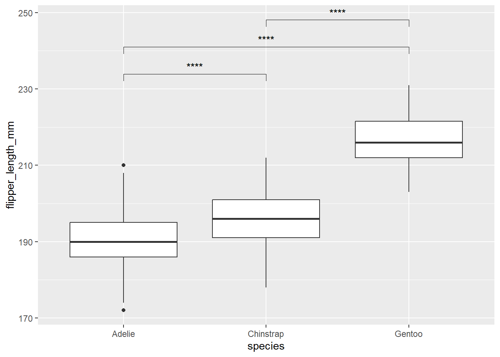

library(tidyverse)
library(rstatix)
penguins <- read_csv("data/palmer_penguins.csv")Estadísticos con Tidyverse
Objetivos
Al final de esta lección serás capaz de:
- Implementar análisis estadisticos compatibles con pipes con el paquete
rstatixs. - Incluir resultados estadisticos en gráficos generados con ggplot
Estadísticos con rstatix
El paquete rstatix proporciona un marco simple e intuitivo compatible con cadenas (pipe-friendly), coherente con la filosofía de diseño del ‘tidyverse’, para realizar pruebas estadísticas básicas, incluyendo pruebas t, prueba de Wilcoxon, ANOVA, Kruskal-Wallis y análisis de correlación.
El resultado de cada prueba se transforma automáticamente en un marco de datos ordenado (tidy data frame) para facilitar la visualización.
Resumen de los datos con get_summary_stats()
Una función muy útil es la función get_summary_stats() lo cual no arroja varios valores como el promedio, mediana, desviación estándar, etc, en una sola función.
Para esto, utilizaremos la base de datos de los pingüinos
penguins %>%
get_summary_stats(flipper_length_mm, type= "full")# A tibble: 1 × 13
variable n min max median q1 q3 iqr mad mean sd se
<fct> <dbl> <dbl> <dbl> <dbl> <dbl> <dbl> <dbl> <dbl> <dbl> <dbl> <dbl>
1 flipper_le… 342 172 231 197 190 213 23 16.3 201. 14.1 0.76
# ℹ 1 more variable: ci <dbl>Utilizando la filosofía Tidyverse, podemos obtener los estadísticos por grupos:
penguins %>%
group_by(island, species) %>%
get_summary_stats(flipper_length_mm)# A tibble: 5 × 15
species island variable n min max median q1 q3 iqr mad mean
<chr> <chr> <fct> <dbl> <dbl> <dbl> <dbl> <dbl> <dbl> <dbl> <dbl> <dbl>
1 Adelie Biscoe flipper… 44 172 203 190. 185. 193 8.25 6.67 189.
2 Gentoo Biscoe flipper… 123 203 231 216 212 221 9 5.93 217.
3 Adelie Dream flipper… 56 178 208 190 185 193 8 5.93 190.
4 Chinst… Dream flipper… 68 178 212 196 191 201 10 7.41 196.
5 Adelie Torge… flipper… 51 176 210 191 187 195 8 5.93 191.
# ℹ 3 more variables: sd <dbl>, se <dbl>, ci <dbl>
Tip
Con el parámetro type podemos ajustar que tanta información que nos arroja la función, donde algunas de las opciones son:
mean_sd: Promedio y desviación estándarmean_se: Promedio y error estándarfive_number: Mínimo, máximo, q1, q3 y mediana (como en un boxplot)full: Nos arroja toda la información
penguins %>%
group_by(island, species) %>%
get_summary_stats(flipper_length_mm, type = "mean_se")# A tibble: 5 × 6
species island variable n mean se
<chr> <chr> <fct> <dbl> <dbl> <dbl>
1 Adelie Biscoe flipper_length_mm 44 189. 1.01
2 Gentoo Biscoe flipper_length_mm 123 217. 0.585
3 Adelie Dream flipper_length_mm 56 190. 0.88
4 Chinstrap Dream flipper_length_mm 68 196. 0.865
5 Adelie Torgersen flipper_length_mm 51 191. 0.873Supuesto de normalidad y varianza
Shapiro_test
Una de las pruebas mas comunes para la evaluar si nuestra muestra viene de una distribución normal es la prueba de Shapiro. Si bien los principios teóricos de esta prueba van mas allá de los objetivos de este curso, se puede implementar facilmente con la función shapiro_test(), en donde el único argumento que necesita es el nombre de la variable de interés.
penguins %>%
shapiro_test(flipper_length_mm)# A tibble: 1 × 3
variable statistic p
<chr> <dbl> <dbl>
1 flipper_length_mm 0.952 0.00000000354De igual manera,siguiendo la filosofía Tidyverse, podemos realizar la prueba por grupos:
penguins %>%
group_by(species) %>%
shapiro_test(flipper_length_mm)# A tibble: 3 × 4
species variable statistic p
<chr> <chr> <dbl> <dbl>
1 Adelie flipper_length_mm 0.993 0.720
2 Chinstrap flipper_length_mm 0.989 0.811
3 Gentoo flipper_length_mm 0.962 0.00162levene_test()
Evalúa la homogeneidad de varianzas entre grupos. A diferencia de la función anterior, el estadístico se calcula en función de una variable independiente, por lo que debemos utilizar el operado ~
penguins %>%
levene_test(flipper_length_mm ~ island)Warning in leveneTest.default(y = y, group = group, ...): group coerced to
factor.# A tibble: 1 × 4
df1 df2 statistic p
<int> <int> <dbl> <dbl>
1 2 339 19.4 0.0000000108De igual manera es posible hacer el estadístico por grupos:
# primero debemos remover los NAs
penguins %>%
drop_na() %>%
group_by(sex) %>%
levene_test(flipper_length_mm ~ species)Warning: There were 2 warnings in `mutate()`.
The first warning was:
ℹ In argument: `data = map(.data$data, .f, ...)`.
Caused by warning in `leveneTest.default()`:
! group coerced to factor.
ℹ Run `dplyr::last_dplyr_warnings()` to see the 1 remaining warning.# A tibble: 2 × 5
sex df1 df2 statistic p
<chr> <int> <int> <dbl> <dbl>
1 female 2 162 2.90 0.0578
2 male 2 165 0.467 0.627 Comparación de dos gruos con T de student
penguins %>%
t_test(flipper_length_mm ~ sex)# A tibble: 1 × 10
.y. group1 group2 n1 n2 statistic df p p.adj p.adj.signif
* <chr> <chr> <chr> <int> <int> <dbl> <dbl> <dbl> <dbl> <chr>
1 flippe… female male 165 168 -4.81 325. 2.34e-6 2.34e-6 **** penguins %>%
pairwise_t_test(flipper_length_mm ~ species)# A tibble: 3 × 9
.y. group1 group2 n1 n2 p p.signif p.adj p.adj.signif
* <chr> <chr> <chr> <int> <int> <dbl> <chr> <dbl> <chr>
1 flipper_l… Adelie Chins… 152 68 3.79e- 9 **** 3.79e- 9 ****
2 flipper_l… Adelie Gentoo 152 124 1.84e-110 **** 5.53e-110 ****
3 flipper_l… Chins… Gentoo 68 124 1.92e- 64 **** 3.84e- 64 **** penguins %>%
group_by(species) %>%
t_test(flipper_length_mm ~ sex, p.adjust.method = "BH")# A tibble: 3 × 11
species .y. group1 group2 n1 n2 statistic df p p.adj
* <chr> <chr> <chr> <chr> <int> <int> <dbl> <dbl> <dbl> <dbl>
1 Adelie flipper… female male 73 73 -4.56 140. 1.11e- 5 1.11e- 5
2 Chinstrap flipper… female male 34 34 -5.75 65.9 2.54e- 7 2.54e- 7
3 Gentoo flipper… female male 58 61 -9.94 107. 7.11e-17 7.11e-17
# ℹ 1 more variable: p.adj.signif <chr>Análisis de varianza
penguins %>%
drop_na() %>%
anova_test(flipper_length_mm ~species)ANOVA Table (type II tests)
Effect DFn DFd F p p<.05 ges
1 species 2 330 567.407 1.59e-107 * 0.775penguins %>%
drop_na() %>%
anova_test(flipper_length_mm ~ species * sex)ANOVA Table (type II tests)
Effect DFn DFd F p p<.05 ges
1 species 2 327 784.583 1.57e-125 * 0.828
2 sex 1 327 122.119 2.46e-24 * 0.272
3 species:sex 2 327 5.144 6.00e-03 * 0.031Añadir resultados estadísticos a un gráfico de ggplot
Uso deggpubr
library(ggpubr)contrastes <- list(c("Adelie", "Chinstrap"), c("Adelie", "Gentoo"), c("Chinstrap, Gentoo"))
penguins %>%
drop_na() %>%
ggplot(aes(x = species, y = flipper_length_mm)) +
geom_boxplot() +
stat_compare_means(method = "t.test",
label = "p.signif",
comparisons = list(c("Adelie", "Chinstrap"),
c("Adelie", "Gentoo"),
c("Chinstrap", "Gentoo")))